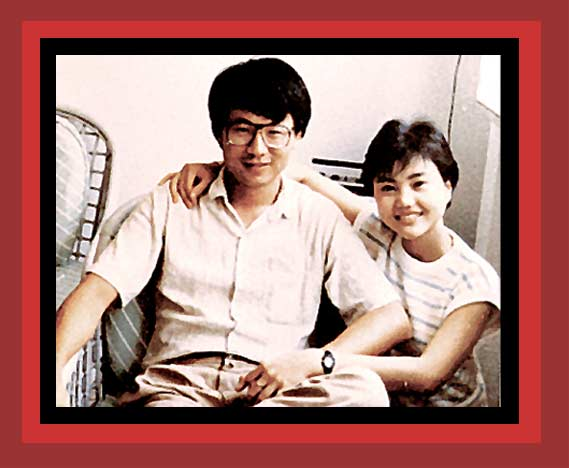

| In June 1989 Chinese troops and tanks crushed prodemocracy demonstrations, the largest massacre occurring in Tiananmen Square, Beijing, in which perhaps 2,600 students and supporters were murdered. Here is shown a photo of one of the victims, a journalist who would be shot a few days after this picture was taken For documentation on communist China's democide and repression, see China's Bloody Century. Source: "Tiananmen, April-June 1989". |